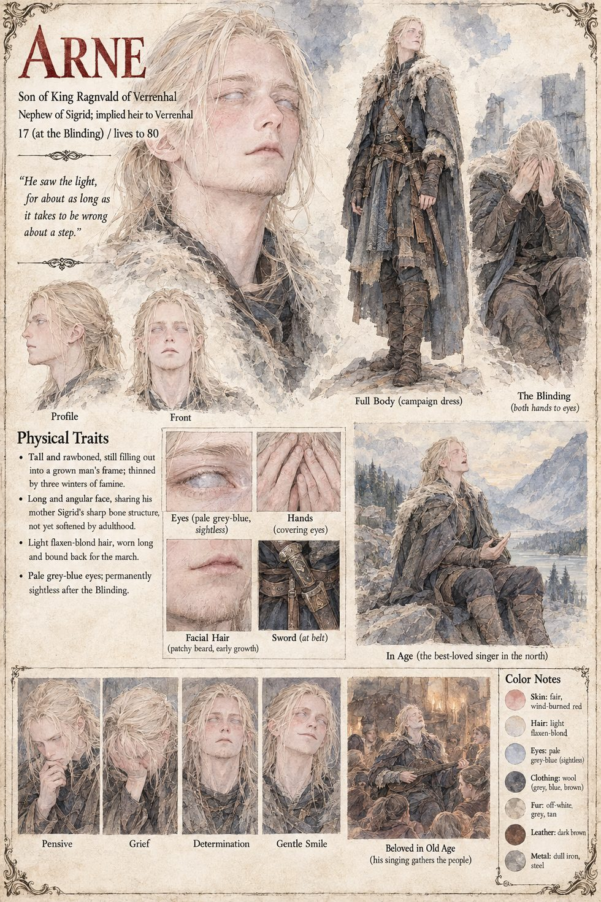

Arne
Sigrid's son · 17 at the Blinding · lives to eighty
Seventeen, rawboned and chewing something that is not food, Sigrid's son marches south at her side, and is given the vanguard because he is the Staff-Keeper's son and nobody else in the host is still strong enough to walk at its head. The herald has cried the king's promise of the low hour in a tongue where the low hour means noon, and Arne leads four thousand of the best of them down the Saltway in good order and in silence, with their eyes uncovered and, because a northerner does not go among strangers without them, their weapons.
The glare takes him in the first instant, and Rufio's wardens loose for eleven minutes. His mother finds him kneeling in the road among the dead with both hands pressed to his eyes, alive and permanently blind. He lives to eighty and becomes, to the astonishment of everyone who ever heard her sing, the best-loved singer in the north. Asked late in life by a young skald what the light had looked like, he says he saw it for about as long as it takes to be wrong about a step.
Appears In

Related Subjects


Related Records

The host of Verrenhal comes down the pass in the ash, the light a gold coin far below: Sigrid at its head with the calendar staff, Ragnvald on his litter, and Arne beside the cart.

Arne leads four thousand northerners across the line at the low hour, eyes uncovered, and the wardens of Rufio's Edge loose for eleven minutes at figures who cannot see them.